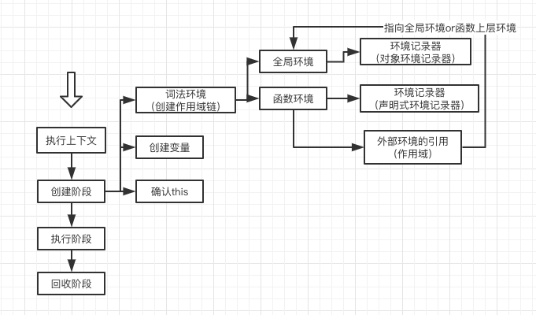

简介
this如论是在平常开发中，还是在面试时都是经常会听到，所以有了这篇文章来更系统的记录this从产生到使用。到最后会有一整篇的面试题来介绍this。
this是在什么时候产生的呢？this的作用是什么，首先要知道一个概念就是执行上下文。要了解清楚执行上下文，又要了解"调用栈"，要了解调用栈，又要了解作用域中的动态作用域。其实后面还有event loop、线程执行等等，所以学无止境，回头是岸。
还是回到"调用栈"和执行上下文，首先了解这两个概念就能知道this是什么时候产生的，this是什么。
首先介绍几个概念：
ECS: 执行环境栈，Execution Context Stack。EC: 函数执行环境（或执行上下文），Execution Context。VO: 变量对象，variable Object。AO: 活动对象，Active Object。S: 作用域，Scope。SC: 作用域链，Scope Chain。
首先执行栈中包含执行上下文，执行上下文中包含有活动变量、变量对象、作用域，一层一层的作用域又会形成作用域链。它们之间都是有关联的。
“调用栈”
什么是调用栈其实也是常说的执行栈，它其实应该叫做执行上下文堆栈会更准确一些。我们还是把它简称为执行栈。
因为 JavaScript 解释器被实现为单线程。这意味着JavaScript 引擎只能同时执行一件事，其它需要执行的事情会被放到一个栈里面储存，这个栈就叫做执行栈。执行栈是一种拥有LIFO（后进先出）数据结构的栈，被用来存储代码运行时创建的所有执行上下文。
执行栈执行过程
当 JavaScript 引擎第一次遇到你的脚本时，它会创建一个全局的执行上下文并且压入当前执行栈。每当引擎遇到一个函数调用，它会为该函数创建一个新的执行上下文并压入栈的顶部。
引擎会执行那些执行上下文位于栈顶的函数。当该函数执行结束时，执行上下文从栈中弹出，控制流程到达当前栈中的下一个上下文。
首先我们看一张比较经典的图。

一个简单的实例，代码如下：
1 | let name = "global name"; |
执行效果如下图所示：

当上述代码在浏览器加载时，JavaScript 引擎创建了一个全局执行上下文并把它压入当前执行栈。当遇到 first() 函数调用时，JavaScript 引擎为该函数创建一个新的执行上下文并把它压入当前执行栈的顶部。
当从 first() 函数内部调用 second() 函数时，JavaScript 引擎为 second() 函数创建了一个新的执行上下文并把它压入当前执行栈的顶部。当 second() 函数执行完毕，它的执行上下文会从当前栈弹出，并且控制流程到达下一个执行上下文，即 first() 函数的执行上下文。
当 first() 执行完毕，它的执行上下文从栈弹出，控制流程到达全局执行上下文。一旦所有代码执行完毕，JavaScript 引擎从当前栈中移除全局执行上下文。
有 5 个需要记住的关键点，关于执行栈（调用栈）：
- 单线程。
- 同步执行。
- 一个全局上下文。
- 无限制函数上下文。
- 每次函数被调用创建新的执行上下文，包括调用自己。
一个在线实例
因为代码太多了这里就不展示了，gif 也比较大，所以只放了一个外国友人的在线实例。有兴趣的可以去看一下。
在线代码体验执行栈执行过程，如果访问比较慢可以看执行栈执行过程 demo把代码下载到本地运行查看。
执行上下文周期
在上面执行栈整个过程中，我们知道每次调用函数时都会创建一个执行上下文，现在我们要了解在JavaScript 引擎内部是怎么创建执行上下文.
在创建完成之后会执行上下文，当执行完成之后会回收当前上下文。
创建执行上下文大致分为三步：
- 创建阶段
- 执行阶段
- 回收阶段
创建阶段
创建阶段
在每次执行函数时都会走创建执行上下文，创建上下文会经历下面这几个事件：
- 创建
作用域并且形成作用域链（Scope Chain）：定义了变量的可访问范围，控制变量的生命周期。 - 创建
变量(variables)、函数(functions)、参数(arguments)： 变量和函数在创建时都会存在Hosting(变量提升)，就是会提前到最前面声明，但是不赋值。 - 确定
this的值：this的复杂之处就在于它不是声明时就能确定，一般情况来说它是调用时确定的。(箭头函数除外)
我看的有挺多文章的创建的整体顺序是不太一样的，我认为他的顺序是当前我文章中的顺序。会先创建作用域再会创建变量，最后确定this的值。
伪代码
1 | executionContextObj = { |
到现在我们知道什么是执行上下文，我们也知道this就是执行上下文创建中产生的。但是它的值并不能在创建的时候确定，而是要到调用时才知道。
其实作用域的本质是一套规则，它定义了变量的可访问范围，控制变量的可见性和生命周期。
创建作用域链
作用域链又可以叫做词法环境，官方的 ES6 文档把词法环境定义为。
词法环境是一种规范类型，基于 ECMAScript 代码的词法嵌套结构来定义标识符和具体变量和函数的关联。一个词法环境由环境记录器和一个可能的引用外部词法环境的空值组成。
简单来说词法环境是一种持有标识符—变量映射的结构。（这里的标识符指的是变量/函数的名字，而变量是对实际对象[包含函数类型对象]或原始数据的引用）。
词法环境有两种类型：
全局环境（在全局执行上下文中）: 是没有外部环境引用的词法环境。全局环境的外部环境引用是null。它的this的值指向全局对象。函数环境: 函数内部用户定义的变量存储在环境记录器中。并且引用的外部环境可能是全局环境，或者任何包含此内部函数的外部函数。
在函数环境中，有两个概念来保证它既可以访问管理自己内部的变量等等，又可以访问外部的变量，下面我们就来介绍这两个概念：
- 环境记录器：是存储变量和函数声明的实际位置。
- 外部环境的引用：它可以访问其父级词法环境（作用域）。
环境记录器又分为两种：
- 声明式环境记录器：存储变量、函数和参数
（在函数环境中）。 - 对象环境记录器：用来定义出现在全局上下文中的变量和函数的关系
(在全局环境中)。
总结一下词法环境分为两种全局环境、函数环境，函数环境又包含两个概念环境记录器、引用的外部环境，而环境记录器又分为两种声明式环境记录器、对象环境记录器。来张图解释一下吧。

注意
- 对于
函数环境，声明式环境记录器还包含了一个传递给函数的arguments对象（此对象存储索引和参数的映射）和传递给函数的参数的length。
1 | GlobalExectionContext = { |
创建变量
在创建变量之前首先要创建变量环境，什么是变量环境呢？
变量环境也是一个词法环境，它也有环境记录器用来记录变量声明语句在执行上下文中创建的绑定关系。
变量环境和词法环境的区别在于变量环境被用来存储函数声明和变量（let 和 const）绑定，而词法环境只用来存储 var 变量绑定。
1 | let a = 20; |
执行上下文看起来像这样：
1 | GlobalExectionContext = { |
- 只有遇到调用函数
multiply时，函数执行上下文才会被创建。
可能你已经注意到 let 和 const 定义的变量并没有关联任何值，但 var 定义的变量被设成了 undefined。
这是因为在创建阶段时，引擎检查代码找出变量和函数声明，虽然函数声明完全存储在环境中，但是变量最初设置为 undefined（var 情况下），或者未初始化（let 和 const 情况下）。
这就是为什么你可以在声明之前访问 var 定义的变量（虽然是 undefined），但是在声明之前访问 let 和 const 的变量会得到一个引用错误。
总结
大致创建过程如下：
- 初始化作用域链：
- 创建变量对象：
- 创建arguments对象，检查上下文，初始化参数名称和值并创建引用的复制。
- 扫描上下文的函数声明：
- 为发现的每一个函数，在变量对象上创建一个属性——确切的说是函数的名字——其有一个指向函数在内存中的引用。
- 如果函数的名字已经存在，引用指针将被重写。
- 扫面上下文的变量声明：
- 为发现的每个变量声明，在变量对象上创建一个属性——就是变量的名字，并且将变量的值初始化为undefined
- 如果变量的名字已经在变量对象里存在，将不会进行任何操作并继续扫描。
- 求出上下文内部“this”的值。
词法环境分为两种全局环境、函数环境，函数环境又包含两个概念环境记录器、引用的外部环境，而环境记录器又分为两种声明式环境记录器、对象环境记录器。
在上面只是简单的讲解了变量提升，如果有兴趣再多了解一下变量声明提升、函数声明提升可以去看我的另一篇文章JavaScript中的变量提升，里面又很多比较好的实例。
执行阶段
在上面我们介绍了创建阶段，现在主要介绍一下执行阶段。
激活/代码执行阶段
- 在当前上下文上运行/解释函数代码，并随着代码一行行执行指派变量的值。
一个实例
1 | let name; |
创建阶段我们用伪代码来表示一下：
1 | // 全局执行上下文 |
执行阶段我们用伪代码描述一下：
1 | // 全局执行上下文 |
let/const是在执行阶段才初始化的，初始化完成就会被赋值。arguments是在创建阶段就被创建和赋值。functions也是在创建阶段就被创建和赋值。variables是在创建阶段被创建，但是没有赋值，在执行阶段被赋值。
functions 赋值式只会声明不会赋值。
如果
JavaScript 引擎不能在源码中声明的实际位置找到let 变量的值，它会被赋值为undefined。
回收阶段
就是在函数执行完成会把当前的执行上下文回收掉，但是全局执行上下文是不会被回收的，只有关闭当前线程/进程才会把全局执行上下文清楚掉。
总结全文
到现在我们知道this是执行上下文中的一部分，它产生在创建阶段(绑定默认值)，改变this在发生在执行阶段.
我们也知道什么是执行栈它是怎么运转的，也知道了执行上下文的生命周期的细节，所以本篇文章到此为止。
如果有哪里有问题欢迎留言，谢谢！
参考
What is the Execution Context & Stack in JavaScript?
了解JavaScript的执行上下文
[译] 理解 JavaScript 中的执行上下文和执行栈